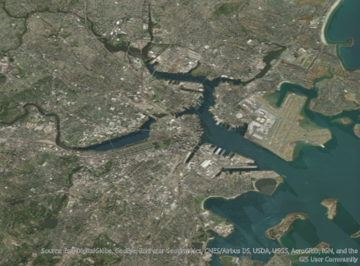

spacey is a package designed to make it trivial to produce beautiful rayshader maps for locations in the United States, letting you easily obtain and combine USGS and ESRI map data into 2D (and eventually 3D) images. This vignette will walk through the basic utilities in spacey and their expected uses.
First, let’s load our package:
The most comprehensive command in spacey is automap, which only requires two vectors, one for latitude and one for longitude1, in order to quickly generate a 2D raytracer image. In fact, you can use as little as a single coordinate pair:

Behind the scenes, automap is doing a few different things that we’ll discuss separately:
- First,
automaplooks at your coordinates (alongside other optional arguments) to determine how large a map should be drawn, calling a fewspaceyfunctions built for geospatial data processing along the way - Next,
automapuses that information to query the USGS National Map and ESRI REST API (no keys required) in order to download elevation and optionally image data for the relevant area - Finally,
automaptakes that data and creates a rayshader map using sensible defaults, resulting in maps similar to the one above.
We’ll run through each of those steps as separate sections.
Geospatial Data Processing
There are a few simple geospatial processing commands baked into spacey in order to figure out where exactly we should be making maps of. These functions are called early on by the automap process to determine the relevant spatial extent for your data, and include the following:
-
get_centroidwill calculate the center of a set of points. For instance, let’s say we had a dataset of two coordinate pairs – we could find the central point between them like so:
get_centroid(lat = c(42.35375, 42.36645), lng = c(-71.06750, -71.05030))
#> lat lng
#> 42.3601 -71.0589Note that I’m using decimal degrees throughout this vignette. spacey also has built-in support for measurements in radians, using the argument coord.unit = "radians" in relevant functions. You can also transform your coordinates yourself using the convenience functions deg_to_rad and rad_to_deg, if necessary. There is currently no support for degree-minute-second format.
-
get_coord_bounding_boxwill find the bounding box for a set of coordinates (any length of latitude/longitude pairs), in order to pull the right area for your output map. For instance, we can use our same coordinates as above to find the edges of our data:
get_coord_bounding_box(
lat = c(42.35375, 42.36645),
lng = c(-71.06750, -71.05030)
)
#> $bl
#> lat lng
#> 42.35375 -71.06750
#>
#> $tr
#> lat lng
#> 42.36645 -71.05030All spacey functions deal with boundary boxes via their bottom left (minimum latitude, minimum longitude) and top right (maximum latitude, maximum longitude) corners, named “bl” and “tr” in package outputs.
- Finally,
get_centroid_bounding_boxwill find the square bounding box for a set of central coordinates, with each corner a set distance away from the central point. For example, we can plug in the centroid we calculated earlier and ask for the corners 1 kilometer away like so:
get_centroid_bounding_box(c("lat" = 42.3601, "lng" = -71.0589), distance = 1)
#> $bl
#> lat lng
#> 42.35375 -71.06750
#>
#> $tr
#> lat lng
#> 42.36645 -71.05030All spacey functions with distance arguments by default assume your units to be in kilometers. You can change this behavior by passing an argument to dist.unit – currently, the other acceptable values are miles, m for meters, and ft for feet.
Calling autoplot_2d with only two coordinates (that is, a single latitude/longitude pair) will use get_centroid_bounding_box to find a suitable square to map for your provided location. Using more than two coordinates will do one of two things, depending on the value you provide to the distance argument:
- A
distanceargument of 0 orNAwill callget_coord_bounding_boxand then map the smallest rectangle that fits your data - Any other
distanceargument will then callget_centroid, followed byget_centroid_bounding_box, mapping a square of the specified distance around your data’s central location
It should be noted that spacey really isn’t a geospatial processing library, and these commands are built to be exactly as accurate as needed by core package functions. For that reason, you probably shouldn’t rely upon get_centroid or get_*_bounding_box for points near extreme latitudes or longitudes, as there are no adjustments built in to deal with these locations, since the USGS data spacey is designed to work with doesn’t really wrap those.
API Access
The next suite of functions provided by spacey are the API access functions, which will pull data for your region from the USGS National Map and (optionally) the ESRI public API. A huge thank-you is in order here to Will Bishop, whose essay on using rayshader laid the groundwork for a lot of the API access code contained in this package.
There are two main functions used to access these APIs:
-
get_heightmapretrieves the USGS digital elevation model for the specified area, returning a raster matrix. -
get_image_overlayretrives the ESRI image texture for the specified area, returning a PNG matrix.
Both of these functions are essentially identical, taking a bounding box (like the ones produced by get_*_bounding_box) and returning a matrix object which can be used by rayshader functions. The basic syntax for get_heightmap is as simple as this:
bounding_box <- get_centroid_bounding_box(c("lat" = 42.3601,
"lng" = -71.0589),
distance = 10)
heightmap <- get_heightmap(bounding_box)The syntax for get_image_overlay is almost as simple – the only difference is an additional parameter, overlay, which specifies which ESRI basemap to pull the data for:
(Note that I’m cheating a little bit for this vignette – in order to get properly sized graphics, the get_heightmap and get_image_overlay calls used to build these maps both used the argument major.dim = 1200, doubling the default image size.)
You can also optionally save each object into a file (using save.tif and tif.filename in get_heightmap and save.png plus png.filename in get_image_overlay), letting you retrieve the data later without having to ping the API (or worry about the data changing between runs!). You can them reimport those files using either load_heightmap for .tif files, or load_overlay for .png basemaps.
Mapping
At this point, with our data imported into R, we’re more than able to run our data through rayshader in order to create beautiful, hand-tailored maps. In fact, we can entirely replicate the map we started with by chaining together a few steps:
library(rayshader)
heightmap %>%
sphere_shade(texture = "imhof4") %>%
add_water(detect_water(heightmap), color = "imhof4") %>%
add_shadow(ray_shade(heightmap, zscale = 0.3, lambert = TRUE),
max_darken = 0.5) %>%
add_shadow(ambient_shade(heightmap, zscale = 0.3), max_darken = 0.5) %>%
plot_map()
We can even add our overlay with just a single additional step:
heightmap %>%
sphere_shade(texture = "imhof4") %>%
add_water(detect_water(heightmap), color = "imhof4") %>%
add_shadow(ray_shade(heightmap, zscale = 0.3, lambert = TRUE), max_darken = 0.5) %>%
add_shadow(ambient_shade(heightmap, zscale = 0.3), max_darken = 0.5) %>%
add_overlay(overlay, alphalayer = 0.75) %>%
plot_map()
My guess is that most people who use spacey will eventually move on to carefully designing their output maps, since you’re able to control things with much more granularity using the core rayshader functions than you are with anything in spacey.
However, the automapping facilities in spacey can let you iterate on your design more quickly, testing out different shadings, overlays, and colorations before moving on to more thorough map detailing using rayshader directly. Right now, the only function in spacey in this category is automap, which will let you customize most rayshader variables in a single function call:
automap(lat = 42.3601,
lng = -71.05,
distance = 20,
overlay = "World_Terrain_Base",
colorscale = c("water" = "unicorn", "land" = "bw"),
overlay.alpha = 0.3) %>%
plot_map()
The hope is that by providing sensible defaults to iterate on and easy access to data, spacey will help you make more and better maps, letting you prototype your ideas before committing to a design and helping you better understand your study system and the world we live in.
Acknowledgements
rayshader, which powers the maps coming out of automap, was built by Tyler Morgan-Wall, and can be extended far beyond what I’ve done here – check out its main website.
The USGS and ESRI query code has its roots in Will Bishop’s fantastic essay on using rayshader.